What is Engineering, and Should You Major in it?
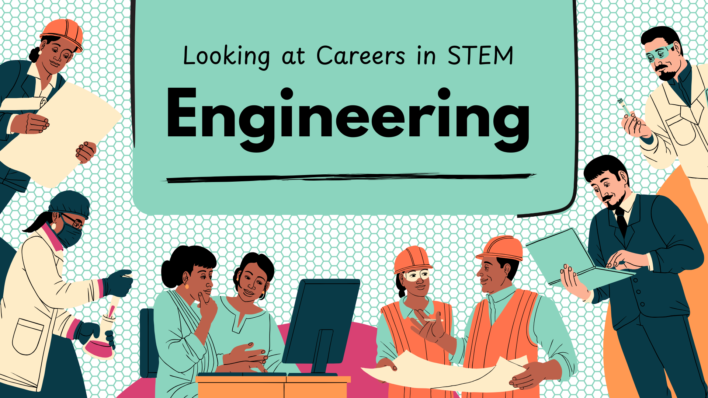
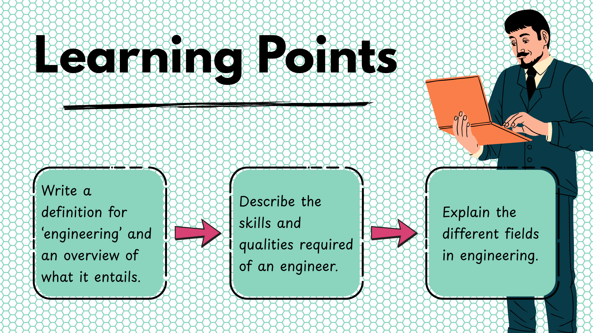
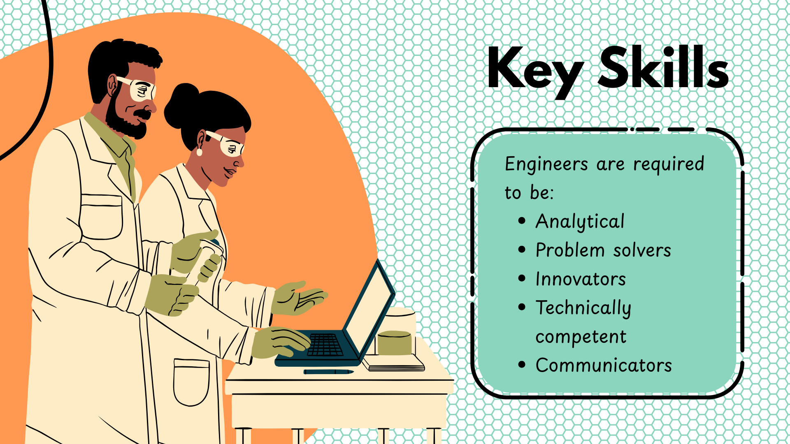
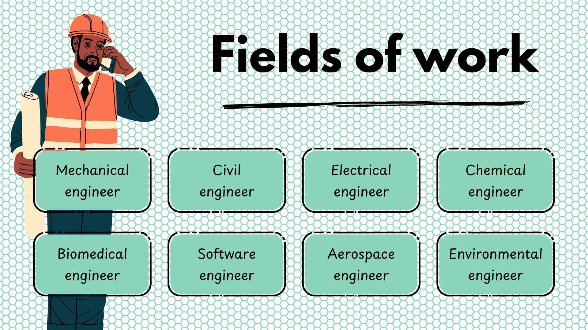
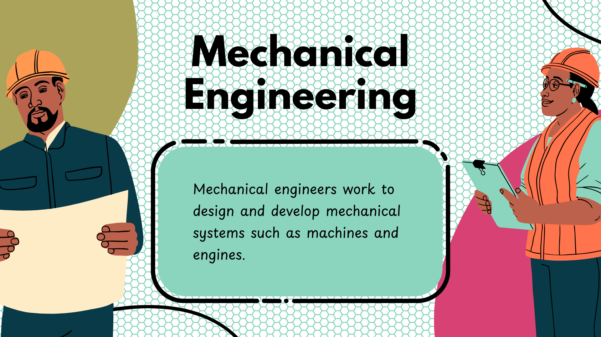
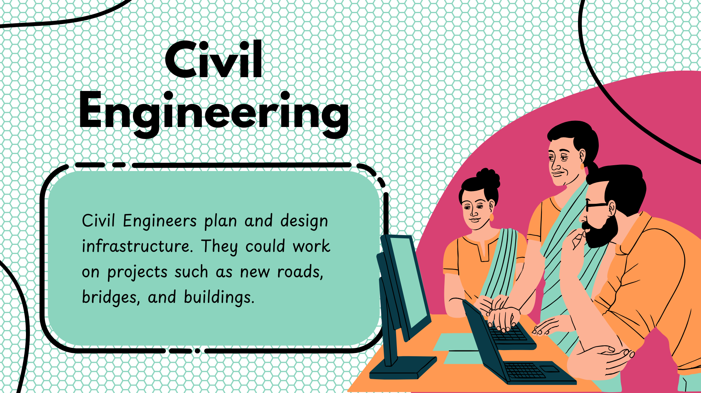
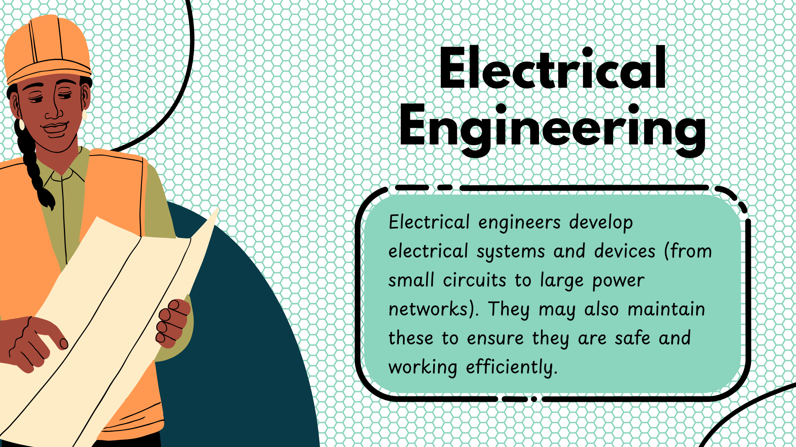
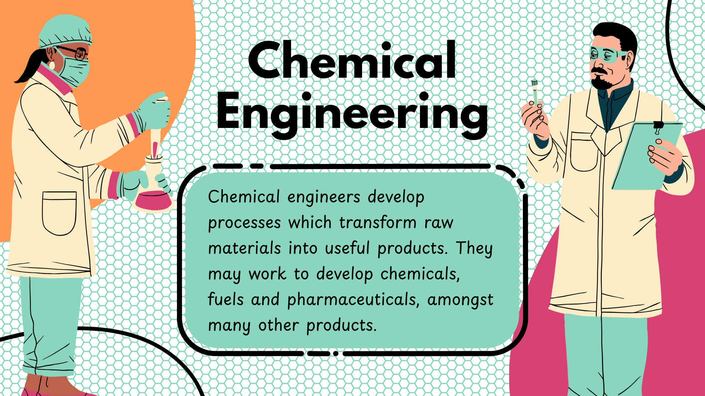
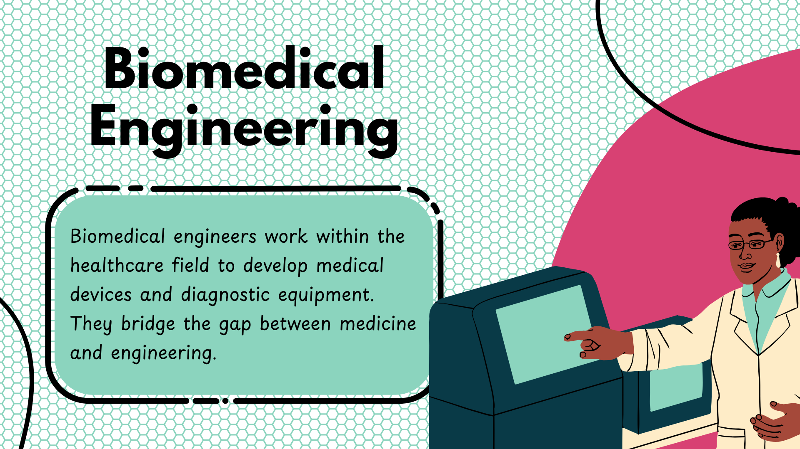
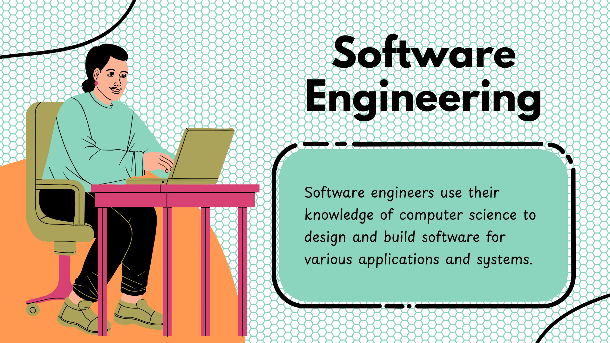
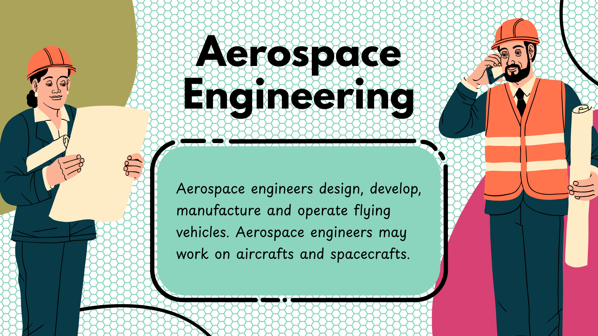
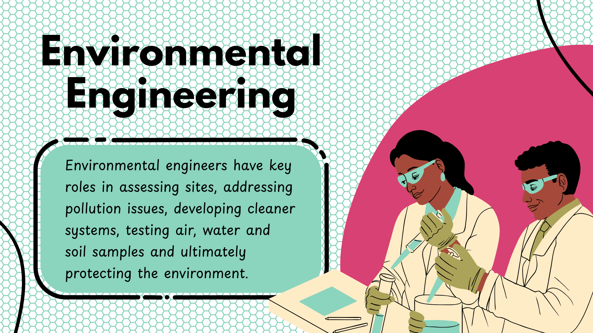
Sub-fields of Engineering Disciplines
Click for a quick Summary of all Engineering Fields
-
Mechanical Engineering:
- Industries: Automotive, medical, construction, aerospace, energy, manufacturing, technology, robotics
- Roles: Design, test, develop manufacturing systems, maintain products
-
Civil Engineering:
- Industries: Construction, transportation, environmental, urban planning
- Roles: Design, build, maintain infrastructure (roads, bridges, buildings, water supply)
-
Electrical Engineering:
- Industries: Electronics, defense, medical, aerospace, telecommunications, power generation, control systems
- Roles: Design, develop, maintain electrical systems and equipment
-
Chemical Engineering:
- Industries: Pharmaceuticals, petrochemicals, food processing, materials
- Roles: Design and operate processes converting raw materials into products
-
Software Engineering:
- Industries: Software development, IT services, technology
- Roles: Design, develop, test, maintain software applications and systems
-
Aerospace Engineering:
- Industries: Aviation, space exploration, defense
- Roles: Design, test, manufacture aircraft, spacecraft, related systems
-
Environmental Engineering:
- Industries: Environmental consulting, waste management, renewable energy
- Roles: Design and implement solutions to environmental problems
-
Biomedical Engineering:
- Industries: Healthcare, medical device, biotechnology
- Roles: Design and develop medical devices, equipment, systems
Industrial Engineering:
- Industries: Manufacturing, logistics, supply chain
- Roles: Optimize processes, systems, operations for efficiency and quality
Materials Engineering:
- Industries: Materials science, manufacturing, research
- Roles: Develop and test materials for various applications
Petroleum Engineering:
- Industries: Oil and gas
- Roles: Design and develop methods for extracting oil and gas, manage production and refining
Mining Engineering:
- Industries: Mining, minerals, natural resources
- Roles: Design and develop methods for extracting minerals, manage mining operations and safety
Nuclear Engineering:
- Industries: Nuclear power, radiation safety, medical
- Roles: Design and develop nuclear systems, manage safety and waste disposal
Marine Engineering:
- Industries: Shipping, offshore oil and gas, naval
- Roles: Design, build, maintain ships, submarines, offshore structures, manage marine operations
Robotics Engineering:
- Industries: Robotics, automation, manufacturing
- Roles: Design, develop, maintain robotic systems for various industries
Mechatronics Engineering:
- Industries: Robotics, automation, manufacturing
- Roles: Design, develop, maintain integrated systems (mechanical, electrical, software)
Systems Engineering:
Industries: Aerospace, defense, transportation, telecommunications
Roles: Design, develop, manage complex integrated systems
Structural Engineering:
- Industries: Construction, architecture, civil engineering
- Roles: Design, analyze, maintain structures (buildings, bridges, dams)
Geotechnical Engineering:
- Industries: Construction, mining, environmental
- Roles: Analyze and design foundations, slopes, earth structures, manage soil and rock properties
Acoustical Engineering:
- Industries: Audio, telecommunications, environmental
- Roles: Design and analyze sound systems, noise control, acoustics
Automotive Engineering:
- Industries: Automotive, transportation, manufacturing
- Roles: Design, develop, test vehicles and components, manage production and quality control
Control Engineering:
- Industries: Automation, robotics, manufacturing
- Roles: Design and develop control systems for processes, machines, systems
Agricultural Engineering:
- Industries: Agriculture, food processing, environmental
- Roles: Design, develop, maintain agricultural systems and equipment, manage sustainability
Computer Engineering:
Industries: Information systems, hardware, software, AI, networks, embedded systems
Roles: Design and develop computer systems (phones, computers, smart TVs, tablets, consoles)